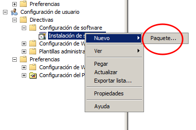

Instalación remota
Es posible distribuir software por medio de la red si tenemos un dominio, de tal forma que desde el servidor podamos indicar la instalación de un programa en un equipo o varios y mandar el archivo de instalación.Para poder llevar a cabo una distribución de software es necesario que el paquete de instalación sea de tipo .msi. En caso de que no podamos encontrar el programa en este tipo de empaquetado, se pueden usar programas que permiten convertir un .exe a un .msi
La distribución de software se configura por medio de una directiva de grupo, de forma que nos iremos a la unidad
organizativa que contenga el conjunto de usuarios o equipos a los que queremos aplicar la distribución de software, en
nuestro caso la unidad SMR, y creamos una directiva nueva.
Creamos una directiva nueva y la editamos. En la edición elegimos instalación de software y creamos un paquete nuevo.

Para distribuir software hemos creado en el servidor una carpeta compartida, con nombre de red app$ ( el $ para que no salga
en el arbol de recursos compartidos) y, además, hemos dado control total al grupo Todos. La ruta a esta carpeta es lo
que tenemos que indicar. En la carpeta previamente hemos copiados los paquetes .smi, en este caso el Winrar.
Cuando le demos a aceptar nos apereceran las opciones para el tipo de implementación, vamos a elegir avanzada.
En las ventanas siguientes marcamos las opciones que se indican a continuación.
Con esto ya tenemos la directiva creada. Para asegurarnos que se aplica, debemos hacer gpudate:
 De esta forma cuando un nuevo usuario, de la OU SMR, inicie sesión se instalará el paquete msi.
De esta forma cuando un nuevo usuario, de la OU SMR, inicie sesión se instalará el paquete msi.